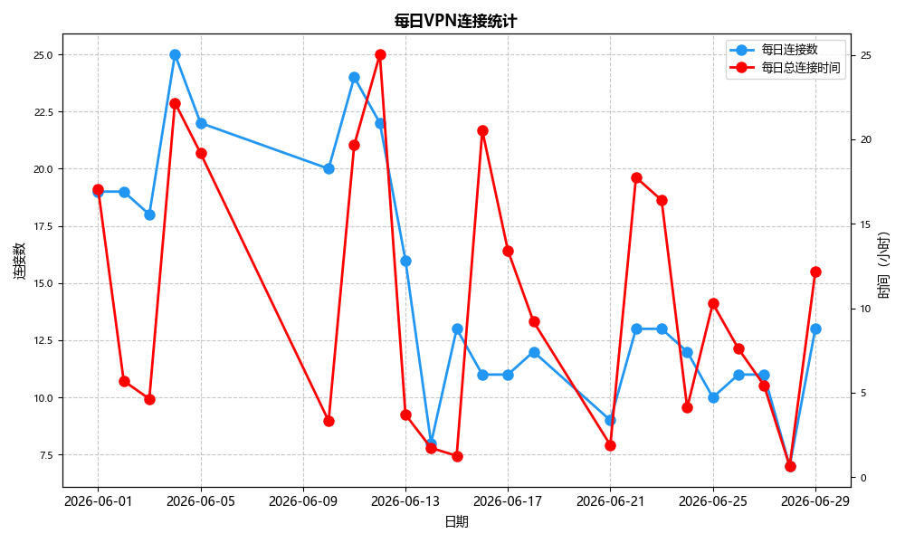
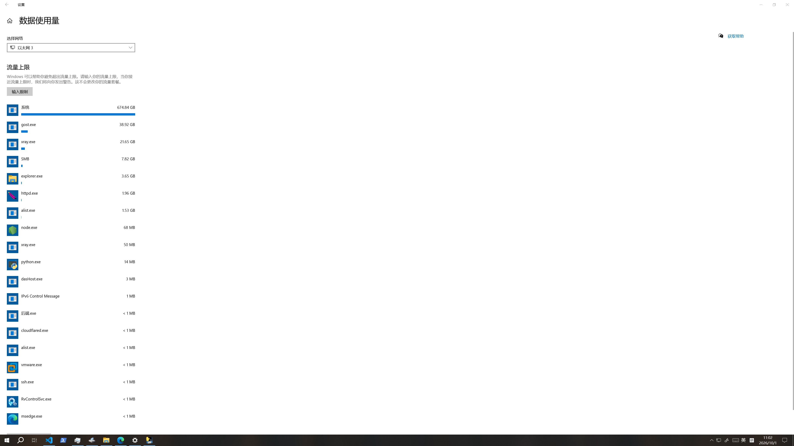
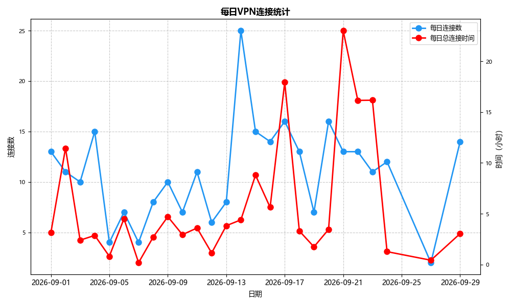
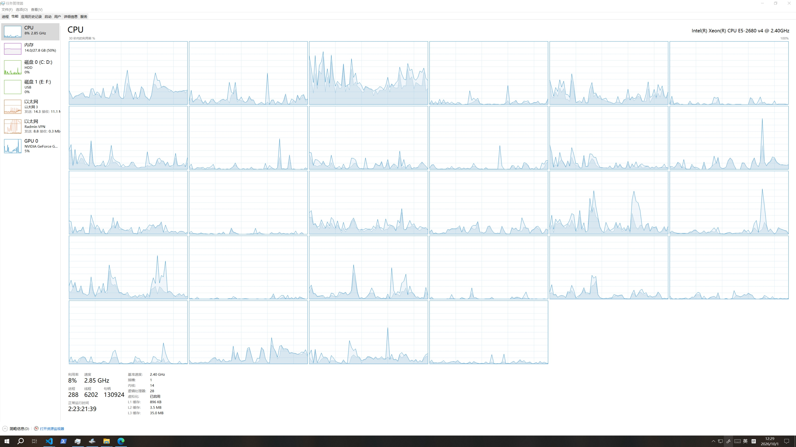

学生目录九月月度报告
本篇报告由辰艾完成，我们将这个月的工作成果汇报如下：
一、本月VPN服务流量统计
如下是六月、九月份的流量统计与VPN各日的使用分析。为了更直观地看到变化，我们把六月作为对照月一起放出。
六月流量趋势

九月流量趋势


六月份全月累计消耗校园带宽约 581.47GB，九月份全月累计消耗校园带宽约 750.57GB。
近两个月累计使用流量超过 1.33 TB，看来这两个月大家使用也挺高的啊 ƪ(˘⌣˘)ʃ
二、本月功能更新
（一）AI聊天室
本月我们增加了一个新功能——AI聊天室，方便同学们在离网状态下使用。
该聊天室也依旧是由我们的成员菀妙海制作出来的。
聊天室通过将请求转发到服务器，再由服务器转发到互联网上，使使用者无须在本地配置网络，从而达到本地无网也可进行聊天。
并且，我们已经着手构建一个适用于学校的AI聊天室版本给信息科老师进行教学，预计将在下个月上线。
最新版网页端：AI聊天室（内网）
（二）音乐网站
我们增加了一个新功能——音乐网站，并增加了新的音乐资源分类，方便同学们在学习之余享受音乐。
该网站是由我们的成员菀妙海耗时将近一个月，从无到有制作出来的。
网站通过将请求转发到服务器，再由服务器转发到互联网上，使使用者无须在本地配置网络，从而达到本地无网也可对音乐进行搜索、播放。
有了它，同学们再也不用每次想听新音乐时都要从网络上下载拷贝到班级电脑啦 o(*^＠^*)o
网页端：音乐网站（内网）
三、服务更新
（一）代理服务转变
我们将原有的代理服务进行了转变，原有的服务是通过 gost 进行提供的，而现在我们将其转变为通过 v2rayN 进行提供。
通过这种方式，我们可以更好地管理和监控网络流量，同时也提高了服务的稳定性和安全性。
并且，本次服务变更还使得使用者可以直接连接外网。
点击了解如何给手机/电脑配置代理：查看教程
（二）存储服务转变
本月我们也将原有的存储服务进行了转变，原本由 alist 进行提供，而现在我们将其转变为通过 openlist 进行提供。
在完成迁移之后，我们还为 openlist 前端套上了一套由团队成员 YuebiTTT 开发的玻璃拟态主题——openlist_beautification。该主题支持明暗双视频背景、自定义顶栏与底栏、搜索面板和快捷入口菜单，点击主题按钮时还会有从鼠标位置扩散的转场特效。整套方案由纯 CSS 与原生 JS 实现，不修改任何页面模板，后台粘贴两段代码即可生效。
原有 UI 经过这次优化后，界面更加简洁、易用、好看，同学们打开存储服务时的观感提升了不少。
项目均已开源，欢迎访问 openlist_beautification 项目主页 一起共建～
如果你觉得这个项目对你有帮助，欢迎来给一个Star⭐哦~
四、硬件升级
我们将我们的服务器配置进行了升级
我们升级了服务器配置，增加了内存和硬盘空间，以满足更高的需求。
目前服务器 CPU 为 Intel Xeon E5-2680 v4 @ 2.40GHz，内存已扩充至 28GB，实际运行中内存使用约 7GB，空闲内存保持在 24GB 左右。得益于这些升级，服务器能够更好地处理更多的请求，提高服务的响应速度。
从任务管理器的截图也能直观看到，在 2 小时 23 分钟的持续运行中，CPU 占用率稳定在 8% 上下，各核心负载曲线分布均匀，说明当前配置对日常流量有比较充裕的余量。
看着这么多框框和 28GB 的内存，真是不知道该怎么样才能喂饱这些性能怪兽 ヾ(≧▽≦*)o
当然，如果有什么想在我们服务器上跑的程序，也欢迎提出建议！
服务器配置

五、本月贡献者
辰艾 · 报告整理、流量统计、主站维护
负责本月报告撰写、六月与九月流量数据汇总，以及主站信息同步和项目协调。
菀妙海 · AI聊天室、音乐网站
本月两个新功能均由菀妙海完成，从请求转发架构到网页端体验都有参与，耗时近一个月。
YuebiTTT · openlist_beautification
虽然已经毕业，但依然为存储服务提供了前端美化主题，支持明暗双视频背景、自定义顶栏底栏等功能。
感谢各位的付出，正是这些提交让工具矩阵更加可靠。
六、附：GitHub 组织仓库索引
下面是学生目录在 GitHub 上托管的部分开源仓库，欢迎感兴趣的同学一起 fork 和共建。
- 核心项目： Ps-Student-Catalog（主站点）、 NetworkRepairs（网络连接工具）、 Chatbox-Front（局域网聊天室）
- 数据分析： VPN_logs_anal（VPN日志分析）
- 网络工具： InternetRepair（网络修复组件）
- 存储美化： openlist_beautification（openlist 玻璃拟态主题）
- 组织页面： Ps-Student-Catalog-Team.github.io
所有项目均已开源，欢迎访问 GitHub 组织主页 一起共建。
七、下月计划
- Ps-Student-Catalog 升级：将推出学生目录 3.0 版本，支持更多功能。
- AI聊天室校园版上线：面向信息科教学场景的版本预计下月上线。
- 音乐网站继续补充资源：优化分类与搜索体验。
招新：一起加入我们的团队
如果你看到这里，说明你大概知道我们平时在做什么了。学生目录不是什么正式社团，也没有太多规矩，就是一群人的，觉得“这东西挺有意思”，顺手把校园里一些不太方便的地方做成了能用的工具。
这几个月我们做了 AI 聊天室、音乐网站，把代理服务换成 v2rayN，把存储换到 openlist，还给 openlist 套了 YuebiTTT 写的玻璃拟态主题；服务器也加了内存，流量统计一直在跑。事情不算少，但人手一直不多，课还挺多。
所以这次想招几个人，方向不限。没有基础也没关系，只要愿意学、愿意问、不跑路。我们更怕的是三分钟热度，而不是不会写代码。
你能得到的大概是：真实项目经验、GitHub 提交记录、一台可以折腾的服务器、几个能一起 debug 的人，以及偶尔在午休时间修 bug 的快乐。大家一起忙里偷闲。
想加入的话，可以点击链接加入QQ群 学生目录 ， 找辰艾或菀妙海都可以；也可以在 GitHub 组织仓库提 issue，备注一下“招新”。不用写正式简历，说说你想做什么、会什么、每周大概能花多少时间就行。